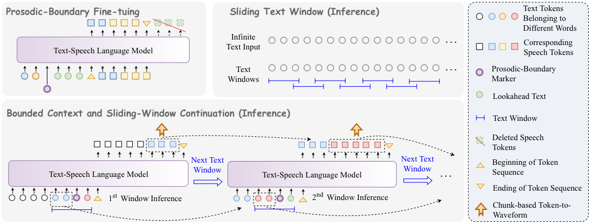

Prosodic Boundary-Aware Streaming Generation for LLM-Based TTS with Streaming Text Input
InterSpeech 2026 — Audio Demo

Chunk size = 5 words
(all systems);
Lookahead = 2 words
(proposed method only).